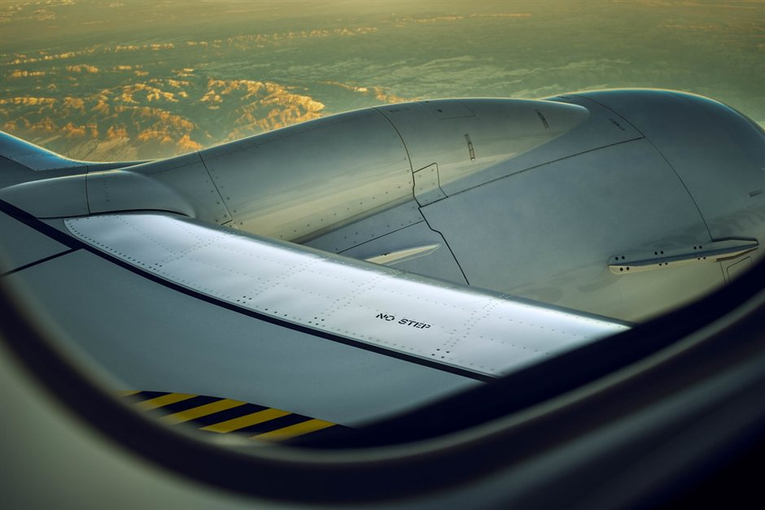

Marrakech (RAK) and Fes (FEZ) sit on opposite sides of the High Atlas mountains and the Erg Chebbi dunes. Most travelers default to booking a standard round-trip flight into Marrakech because it appears simpler or cheaper on search engines. However, driving from Marrakech to the dunes at Merzouga takes about nine to ten hours of road time, and returning to Marrakech requires taking almost the exact same winding route back over the Tizi n'Tichka pass.
By booking an open-jaw (multi-city) flight—arriving in Marrakech and departing from Fes—the road from Merzouga to Fes becomes your exit route rather than a side trip. The drive north from Merzouga through the Ziz Valley and Middle Atlas to Fes takes around seven to eight hours through completely different terrain. You cover the desert in a natural linear progression, saving a full day of repetitive driving.
The Math of Backtracking vs. Linear Travel
A standard round-trip Marrakech desert itinerary requires driving roughly 1,100 kilometers total, with half of those kilometers spent looking at roads and mountain passes you already crossed on day one. When your morning in the Erg Chebbi camp finishes, you either turn west back toward Ouarzazate and Marrakech, or turn north toward Midelt and Fes.
Choosing the northbound exit converts what would be a wasted day of backtracking into a scenic cross-country transit day. You trade repetitive hairpins on the Tichka pass for cedar forests, apple orchards around Midelt, and the gorge scenery of the Ziz River.
- Marrakech round-trip route: ~1,100 km total (19–21 total driving hours).
- Marrakech to Merzouga to Fes linear route: ~1,000 km total (15–17 driving hours).
- Net saving: 4 to 5 hours of total seat time and 100% unique scenery.
Flight Availability and Ticket Pricing Realities
Travelers often worry that multi-city tickets carry heavy pricing penalties. For European travelers flying budget carriers like Ryanair, EasyJet, or Transavia, booking two separate single legs (e.g., London to Marrakech, then Fes to London) usually costs within €20 to €40 of a standard return fare.
For transatlantic travelers using legacy carriers like Royal Air Maroc, Air France, or Iberia, selecting the 'Multi-City' search option on flight engines yields prices virtually identical to round-trip fares into Marrakech, provided both cities are served by the same airline alliance.
Which Direction Is Better: RAK-to-FEZ or FEZ-to-RAK?
You can run this linear route in either direction depending on flight availability and ticket costs. Starting in Marrakech and ending in Fes (/blog-marrakesh-vs-fes-start) gradually builds up scenery drama: starting in the red city, crossing the High Atlas, exploring the Dadès valley, reaching the dunes, and exiting via the Middle Atlas.
Starting in Fes and ending in Marrakech works equally well. The primary operational difference is pacing: the Fes-to-Merzouga leg is typically done in one long 7.5-hour day, whereas the Marrakech-to-Merzouga leg is comfortably broken into two days with an overnight stop in the Dadès or Ouarzazate gorge country.
Luggage and Vehicle Logistics
Because private desert drivers and group transfers routinely operate between Marrakech and Fes, handling your luggage (/blog-luggage-storage-sahara-desert-packing) is straightforward. Your bags remain locked inside the vehicle trunk during daytime visits and transfers.
When you arrive in Merzouga, your main luggage stays safely stored at the desert operator's base hotel or transfer vehicle, while you take a small overnight bag into the dune camp. Upon leaving the desert, all luggage travels with you to your drop-off point at your Fes riad.
| Route Type | Total Road Time | Scenery Overlap | Recommended Length |
|---|---|---|---|
| Marrakech Round-Trip | 19–21 hours | 100% overlap on return leg | 4 to 5 days |
| Open-Jaw (RAK in, FEZ out) | 15–17 hours | 0% overlap (linear route) | 3 to 4 days |
| Open-Jaw (FEZ in, RAK out) | 15–17 hours | 0% overlap (linear route) | 3 to 4 days |
| Fes Round-Trip | 15–16 hours | 100% overlap on return leg | 3 to 4 days |

Illustration, not a photograph — for the real thing, you'll have to stand on the ridge yourself.
Quick answers
A few follow-up questions travelers ask about this.
Is a open-jaw desert tour ending in Fes more expensive than a round-trip to Marrakech?
No. The cost for a private tour ending in Fes is almost identical to a round-trip tour back to Marrakech. The driving distance is slightly shorter, which balances out any empty-return vehicle relocation costs.
Can shared group tours accommodate a drop-off in Fes?
Yes. Most shared desert tour operators offer an option to transfer to a Fes-bound minibus or taxi after returning from the sand dunes in Merzouga.
How far in advance should I book flights into Marrakech and out of Fes?
Spring (March–May) and autumn (September–November) are peak travel seasons in Morocco. Booking flights 2 to 4 months in advance ensures better flight times and reasonable fare choices.
Planning your own route?
Tell us your dates and what matters to you — we'll answer with a straight recommendation, not a brochure.
Send an inquiry See the itineraries